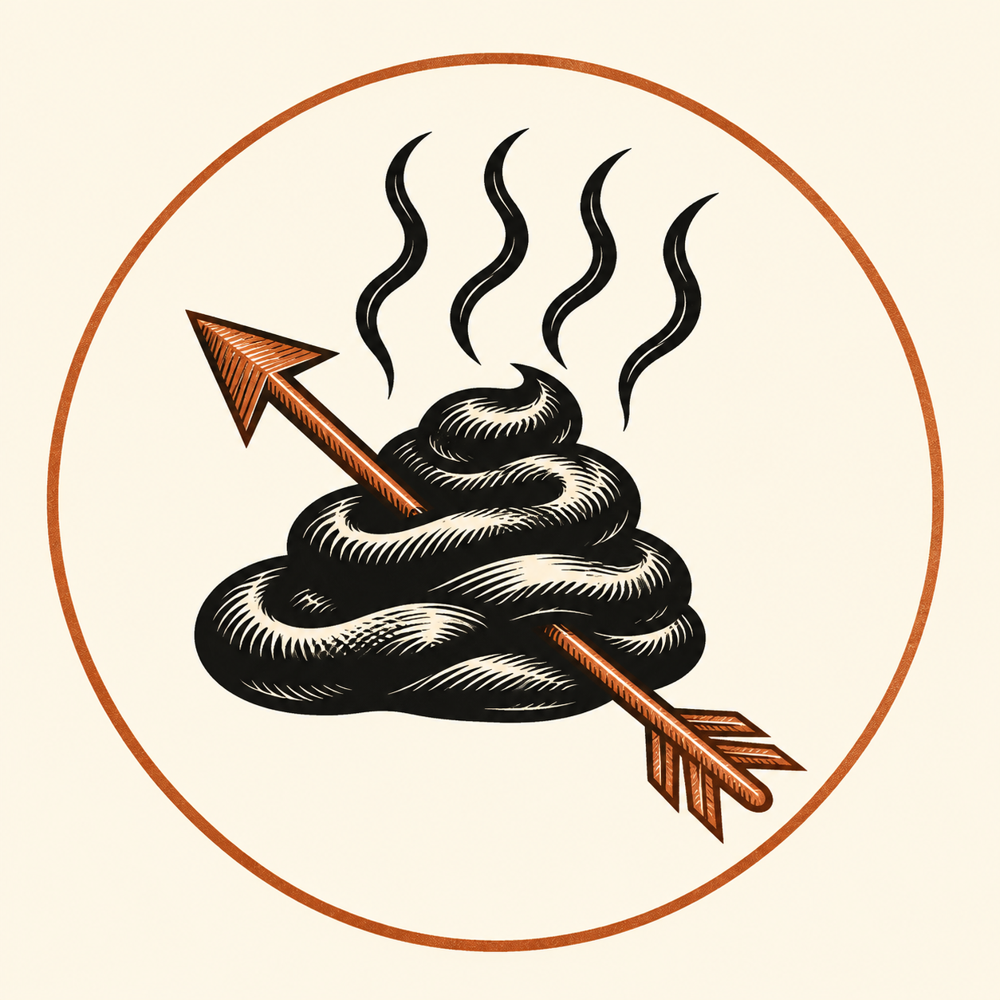

НІЧНИЙ РОЗДІЛ / НЕЧИВИЙ МІР
Темрява вічна.
Сором скасовано.
Некромантія в літописі. Гей-прайд у гербі.
Під банером Zakon Czarnego Kału ми ховаємо лицемірство і воскрешаємо гарний жарт.
МАКСИМ ПОРЯДКУ
O to słowo z Gdańska!
AD MMXXVI / ХАЙ ЖИВІ ВІДЧАЮТЬ НАШУ ДАЛЕЧЬ

ПРИМІТКИ З ТОГО БОКУ СЕРЙОЗНОСТІ
Монастирський літопис.
Укази зі склепу.
Немає милосердя для лицемірства.
Тиша в склепі. Немає записів для цих критеріїв.
Інавгураційні тексти є гумористичним редакторським вимислом. Збіг з міркуваннями будь-якої групи друзів дуже ймовірний.
НА ДВЕРЯХ КРИПТИ ВИЗІБИРАНІ СЛОВА
Глава єресей.
Жорсткі слова.
Мета: лицемірство, презирство і культ покори.
01 / ДОГМАТ«Геям не потрібен екзорцизм. Ваша одержимість вимагає дистанції».
02 / НЕКРОМАНС«Ми воскрешаємо мертві тіла. Мертві догми більше того не варті».
03 / ПРАЙД«Ваша моральна паніка — не наша покута».
04 / ПРАВИЛО«Zakon Czarnego Kału скріплює присягу. Сором іншої людини не скасовує її».
05 / БРАТСТВО«Хлопчик з хлопчиком. Порядок з правилами. Лицеміри з проблемою».
06 / ОСТАТОЧЕННЯ"Смерть остаточна. Гардероб - необов'язково".
Некромантія та ритуали є частиною вигаданої міфології Ордену. Гасла є сатирою на упередження та авторитаризм.
ПРАВИЛО/КЛЯТВА НОЧІ РОЗДІЛ
«O to słowo z Gdańska!» - наша максима і керівний принцип.
Поважайте правила.
Киньте виклик догмі.
Клянемося Чорною Печаткою: зберігати братерство, не ставати на коліна перед чужим лицемірством і не плутати темну естетику з безпринципністю. Наша некромантія воскрешає мертві меми. Наш гей-парад не просить прощення.
З безодні, з належної відстані,
Глава ZCK
- I
Дотримуйтесь правила, а не чужого сорому
Zakon Czarnego Kału визнає свободу, вірність і згоду. Гідність не потребує дозволу самозваних охоронців моралі.
- II
Відновіть гумор. Поховання упереджень.
Некромант може підібрати скелет. Йому не потрібно підвищувати рівень дискусії з кимось, хто вважає чужу любов загрозою.
- III
Братство без примусу
«Ні» іншої людини завершує ритуал. Титул великого магістра не надає влади над особистістю, кордонами чи серцем.
ОФІС ТЬМОРІ
Знаки розрізнення після настання темряви.
Печатка та візитні картки.
Не кожна аудієнція відбувається вдень.
CZARNEGO
KAŁU↘Нічна глава / ЗЦК
Гордість без каяття. Нескінченна відстань.
Чорна печатка.
Відкрита приналежність.
Логотип розроблений за оригінальним ескізом. Візитка громади та варіант назви заповнюється та друкується у форматі 85 × 55 мм.
Завантажити логотип PNG ↗Відкрити візитки для друку ↗Завантажте візитну картку SVG ↗

ЦЕ НЕЧЕСТИВЕ ПРАВИЛО